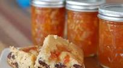

Orange Marmalade

This Orange Marmalade recipe is made with ordinary oranges and lemons, and it’s as unfussy as it is delicious. It follows the “old fashioned” technique of sitting in a pot overnight, and every spoonful will make your morning toast sparkle.
This recipe makes about 3 quarts total, or 12 (8 ounce jars). It freezes beautifully or you can process it in a water bath for canning.
Ingredients
- 4 large seedless oranges
- 2 lemons
- 8 cups water
- 8 cups sugar
Steps
- Cut oranges and lemons in half crosswise, then into very thin half-moon slices. Discard any seeds. In a large stainless steel pot, add the sliced oranges, lemons, and any accumulated juices.
- Add water and bring the mixture to a boil, stirring often. Remove from the heat and stir in the sugar until it dissolves. Cover and let stand overnight at room temperature.
- The next day, bring the mixture back to a boil. Reduce heat to low and simmer uncovered for 2 hours. Turn heat up to medium and boil gently, stirring often, for another 30 minutes.
- Skim off any foam that forms on the top. Cook the marmalade until it reaches 220 degrees (you must hit this temperature for the natural pectin to gel with the sugar).
- To test if the marmalade is ready, place a small amount on a plate and refrigerate it until it's cool but not cold. If it's firm (neither runny nor hard), it's ready. It will be a golden orange color. If the marmalade is runny, continue cooking it; if it's hard, add a bit more water.
- Pour the marmalade into clean hot mason jars; wipe the rims thoroughly with a clean damp paper towel, and seal with the lids. Chill in the refrigerator. It may take 24-48 hours for the natural pectin to set up properly.